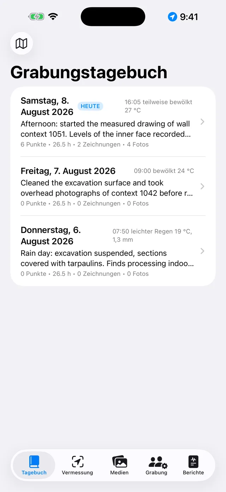
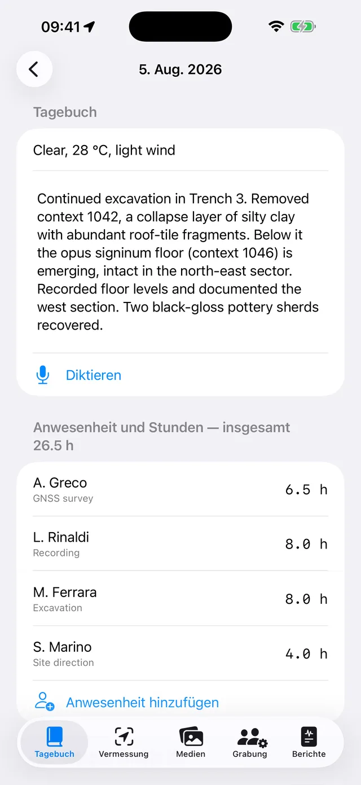
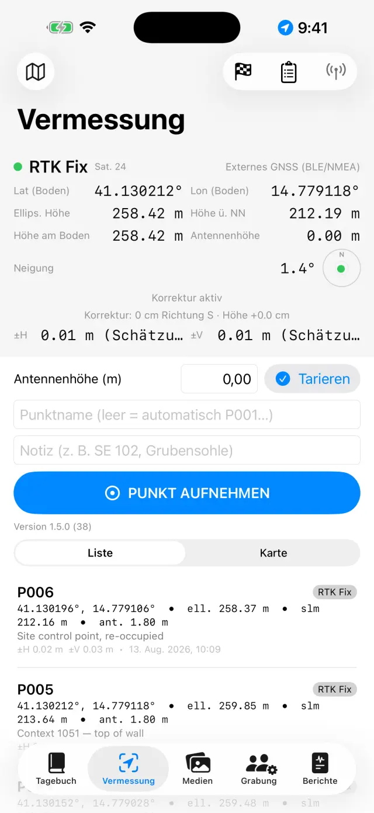
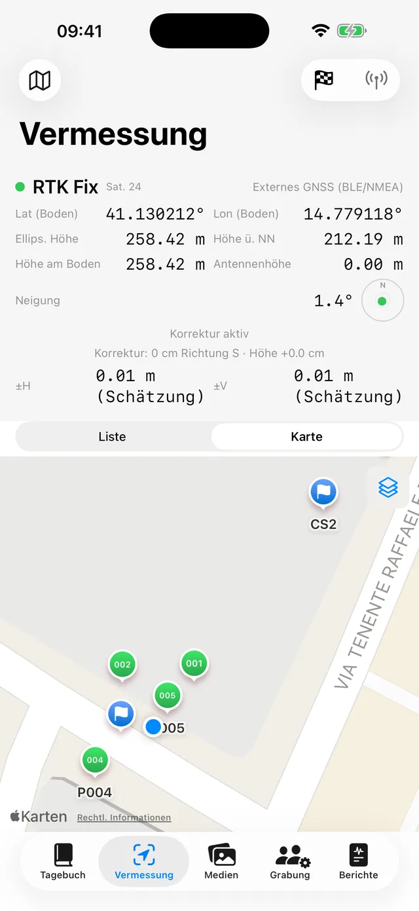
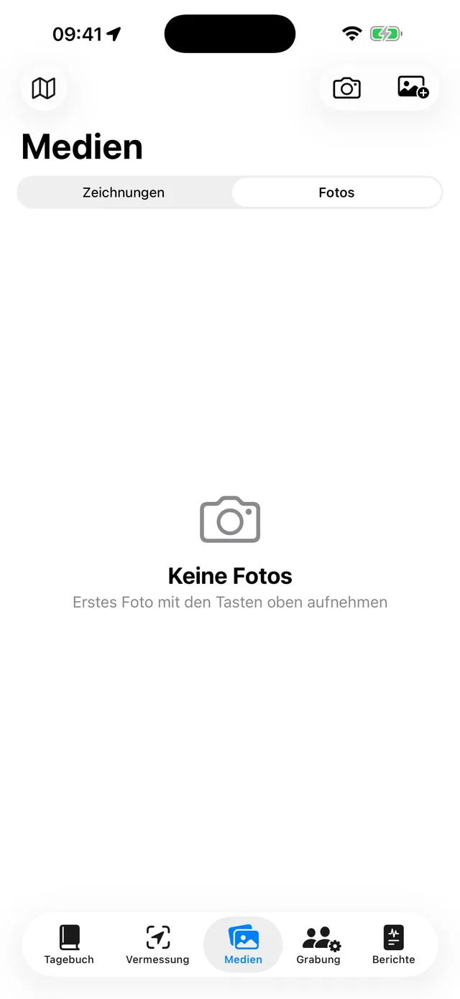
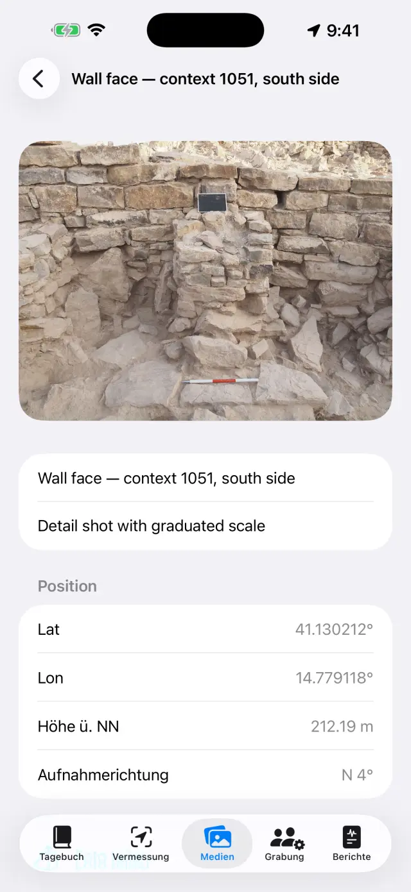
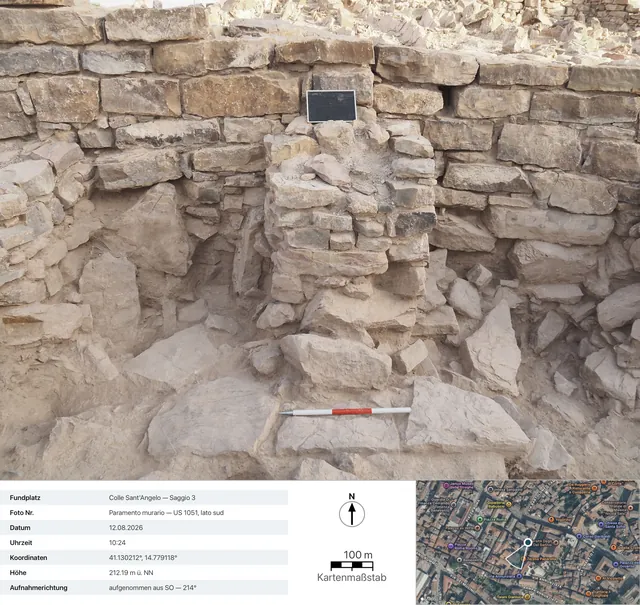
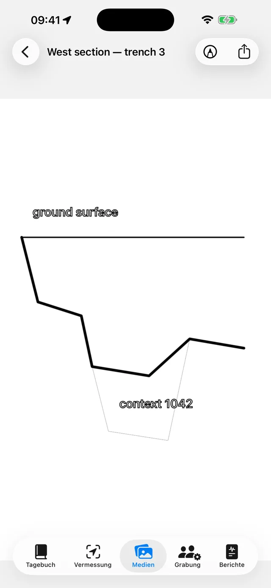
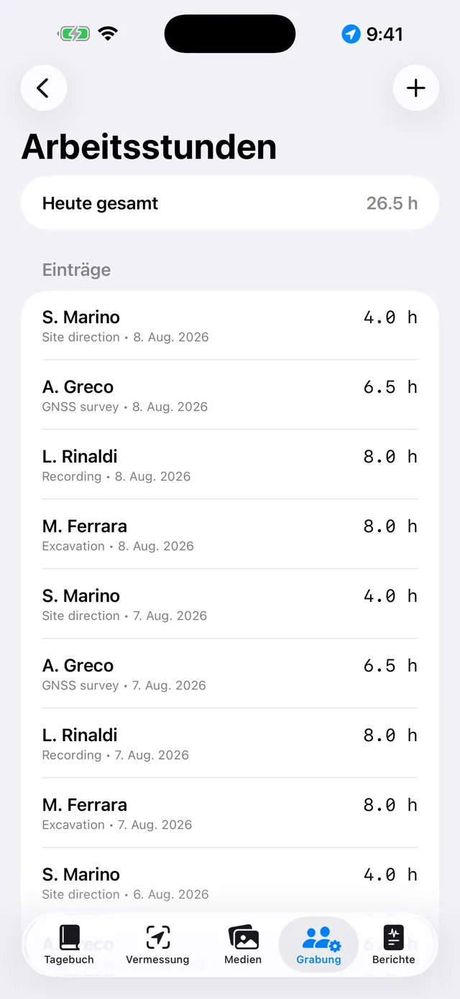
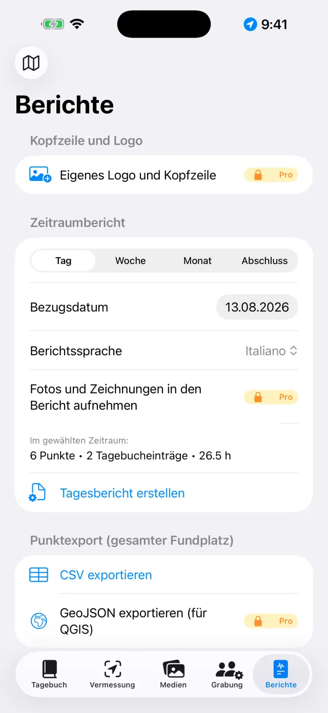

Das digitale Grabungstagebuch für iPhone und iPad. 100 % offline: Ihre Daten bleiben auf dem Gerät.
📱 Android: App herunterladen (APK, kostenlos). Beim ersten Mal fragt Android, ob die Installation aus Chrome oder Dateien erlaubt ist; danach bietet die App Updates selbst an.
❤️ Projekt unterstützen — Giornale di Scavo ist kostenlos, ohne Werbung und ohne Abonnements, und ich entwickle sie in meiner Freizeit. Wenn sie Ihnen auf der Grabung hilft, können Sie die Entwicklung mit einer Spende unterstützen.
Eine einzige Idee trägt alles: Jeder Grabungstag ist eine Seite,
die sich von selbst füllt. Sie erfassen die Dinge dort, wo sie hingehören — einen
GNSS-Punkt in der Vermessung, ein Foto in den Medien, Stunden in der Grabung —
und die Tagesseite im Tagebuch sammelt alles automatisch. Am Ende der
Woche oder der Grabung entstehen die Berichte von selbst aus den Seiten.
Ein typischer Tag
MorgensTagesseite öffnen, Wetter und Tagebuch notieren (oder mit Diktieren sprechen)
TeamIn der Grabung Anwesenheit und Stunden erfassen
VermessungGNSS-Punkte aufnehmen; bei RTK zuerst einen Festpunkt prüfen
FotosAus den Medien fotografieren: Koordinaten werden automatisch angehängt
ZeichnungenProfil oder Planum auf einem Foto durchpausen (digitales Transparentpapier)
SEDie Karten der ausgegrabenen SE und ihre Beziehungen aktualisieren: SE
FundeMit den Kisten vor sich erfassen, was herausgekommen ist: Grabung → Funde
AbendsUnter Berichte den Tagesbericht erzeugen: ein PDF, fertig zum Versand
Erste Schritte
Beim ersten Start finden Sie einen Beispiel-Fundplatz. Für einen eigenen
tippen Sie oben auf den Namen (Symbol 🗺) → Neuer Fundplatz…
und vergeben einen Namen (z. B. „Colle Sant'Angelo — Schnitt 3“).
Der Name des aktiven Fundplatzes ist oben immer sichtbar: Alle Reiter zeigen
dessen Daten. Zum Wechseln tippen Sie erneut auf den Namen: Die Liste steht
unter der Überschrift „Ihre Fundplätze“, und mit Fundplatz umbenennen… korrigieren Sie einen Namen, ohne etwas zu verlieren.
Erteilen Sie die Berechtigungen, wenn Sie gefragt werden:
Standort (für Punkte), Kamera (für Fotos),
Mikrofon (fürs Diktieren), Bluetooth (nur mit externem
Empfänger).
Die sechs Reiter
📓 Tagebuch
Tippen Sie auf einen Tag, um seine Seite zu öffnen: Tagebuch, Wetter, Team,
Punkte, Fotos und Zeichnungen des Tages sind schon da.
Schreiben Sie das Tagebuch oder tippen Sie Diktieren und
sprechen Sie: Die Transkription läuft auf dem Gerät und funktioniert ohne
Netz.
Das Wetter lässt sich von Hand eintragen (z. B. „Klarer Himmel, 28 °C,
leichter Wind“) oder mit Abrufen holen: die App fragt den
norwegischen Wetterdienst nach den aktuellen Bedingungen. Dafür wird ein Netz
benötigt, und es geht nur am heutigen Tag — das Wetter von gestern lässt sich
nicht mehr rekonstruieren. Ein zweites Antippen am Nachmittag fügt eine weitere
Messung hinzu. Was Sie von Hand schreiben, hat immer Vorrang.
Beim Abrufen verlässt nur die auf etwa 11 Meter gerundete Position der
Gegend das Gerät; in den Berichten erscheint die Zeile in der Sprache des
Berichts.

Die Liste der Grabungstage

Die Seite eines Tages
🧱 SE — stratigraphische Einheiten
Eine Karte für jede stratigraphische Einheit, die Beziehungen zwischen den SE
als Verknüpfungen erfasst: Von hier kommen die SE-Karten der Dokumentation und
die Harris-Matrix.
Im Reiter SE auf + tippen: Die App schlägt die
nächste Nummer vor (Sie können sie ändern) und fragt nach Typ und Ansprache.
Die Nummer ist im Fundplatz eindeutig; später ändern Sie sie mit
Ändern, und die Kisten mit dieser Herkunft gehen mit.
Die Karte umfasst Identifikation (Typ, Untertyp, Ansprache, Fläche oder
Sektor, Quadrant, Schnitt, Grabungsmethode: manuell, maschinell oder
Nicht ausgegraben für SE, die dokumentiert, aber nicht ausgegraben
sind), Maße und Höhen (Länge, Breite, Mächtigkeit, minimale und maximale Höhe),
Beschreibung (Farbe, Munsell, Sedimentart, Konsistenz, Bestandteile, Struktur
der Ablagerung und drei Ja/Nein-Fragen: Versiegelt,
Oberflächenverwitterung, Bioturbation), vorhandene Funde,
Interpretation (Aktivität, Phase, Datierung, datierende Elemente), Öffnungs- und
Schließungsdatum und Verantwortliche. Sie speichert sich beim Schreiben von
selbst. Ganz unten finden Sie auch die Fotos und Vermessungspunkte, die die SE
im Titel, im Namen oder in der Notiz nennen („SE 102 von Norden“).
Neben Ansprache, Farbe, Sedimentart, Konsistenz, Bestandteilen, vorhandenen
Funden, Interpretation, Aktivität und Datierung sitzt die Schaltfläche des
Thesaurus (das Büchlein): Wählen Sie aus dem Standardvokabular
oder aus Ihren eigenen Begriffen, und die Karte bleibt unter allen, die graben,
einheitlich. Bei den Bestandteilen und den Funden lassen sich mehrere wählen.
Fehlt das gesuchte Wort, bietet das Blatt an, es hinzuzufügen. Ihre Begriffe
gelten für alle Fundplätze und werden unter Thesaurus verwaltet, im
⋯-Menü des SE-Reiters. Dort wählen Sie auch die
Chronologie des Fundplatzes: Mittelmeerraum oder
Arabischer Golf (DCT), mit den Perioden des DCT-Bogens (Hafit, Umm
an-Nar, Wadi Suq…) als Vorschläge bei der Datierung.
Beziehung hinzufügen: Beziehung wählen (überdeckt, schneidet,
verfüllt, stößt an, im Verband mit, gleich mit, und ihre Umkehrungen) und die
Nummer der anderen SE eingeben. Die Beziehung wird nur einmal erfasst und
erscheint umgekehrt in der anderen Karte: Wenn 101 die 102 überdeckt, lesen Sie
in der 102 „überdeckt von 101“. Hat die andere SE noch keine Karte, wird eine
leere angelegt. Eine Beziehung, die der bereits erfassten Abfolge
widerspricht, wird abgelehnt, mit Erklärung.
Der Abschnitt der Funde zeigt die Kisten, deren Herkunft die SE nennt
(„SE 102“, „MSE 12“): Von Hand ist nichts zu verknüpfen.
Fund hinzufügen öffnet die Fundkarte mit bereits eingetragener
Herkunft.
Im ⋯-Menü zeichnet Harris-Matrix die Abfolge aus den
Beziehungen: die jüngste SE oben, gleiche oder im Verband stehende SE in einem
einzigen Kasten, Interfaces gestrichelt, Mauer-SE auf grauem Grund. Sie lässt
sich mit zwei Fingern vergrößern und als Bild teilen.
Gedruckte Karte: In einer Karte bietet die Teilen-Taste
oben Blatt als PDF und Blatt als DOCX (Word); im ⋯-Menü
der Liste legen Alle Blätter als PDF und
Alle Blätter als DOCX (Word) alle SE des Fundplatzes in eine einzige
Datei, eine pro Seite. Das ist das Archivformular: Tabellen mit den Feldern,
Beziehungen, Funde, Logos und Kopfzeile des Berichts, in der für die Berichte
gewählten Sprache.
Survey123 / DCT: CSV exportieren (DCT-SE-Bogen)
schreibt eine CSV mit denselben Spalten und denselben Codes wie das
Survey123-Formular des DCT-SE-Bogens, bereit zur Abgabe oder zum Hochladen.
CSV importieren (DCT-SE-Bogen)… macht das Umgekehrte: Es liest eine
aus Survey123 (oder aus der App) exportierte CSV und legt die Karten mit ihren
Beziehungen an. SE, die im Fundplatz schon eine Karte haben, bleiben, wie sie
waren, und am Ende sagt die App, wie viele Karten und wie viele Beziehungen sie
hinzugefügt hat. Enthält die Datei die Perioden des Golfs, wechselt die
Chronologie des Fundplatzes zu Arabischer Golf (DCT).
📍 Vermessung
Das Feld oben zeigt die Live-Position: Koordinaten, Höhen, Genauigkeit und
Fix-Typ (GPS / RTK Float / RTK Fix).
Bei Lotstab die Antennenhöhe (m) eintragen: Die Punkthöhe wird
automatisch auf den Boden reduziert.
Tippen Sie auf Punkt aufnehmen. Die Namen laufen fortlaufend
(P001, P002…), eigene Namen (z. B. „Bef. 102 — Grubensohle“) und Notizen sind
möglich.
Wechseln Sie zwischen Liste und Karte; in der Karte
lassen sich Kataster- oder andere WMS-Dienste einblenden.
Festpunkte (🏁) haben ihren eigenen Bereich: aus CSV importieren oder
anlegen, dann die Live-Kontrolle öffnen und mit der Spitze auf dem
Nagel die Abweichungen ΔN/ΔE/ΔH kontrollieren, bevor Sie zu messen
beginnen.
Unter Nivellierbücher steht das Feldbuch für das
Nivelliergerät: Stationen, Rück- und Vorblicke, ab einem Ausgangsfestpunkt
berechnete Höhen, mit Kontrolle des Schlussfehlers. Nivellierte Punkte kommen
mit ihrer Höhe in den Fundplatz, genau wie GNSS-Punkte.
Auf Geräten mit LiDAR-Scanner (iPhone Pro ab dem 12,
iPad Pro) erscheint 3D-Messung:
langsam schwenken, bis die Oberfläche rekonstruiert ist, dann die beiden zu
messenden Punkte antippen und Strecke, Horizontalstrecke und Höhenunterschied
ablesen. Mit An Festpunkt verankern wählen Sie einen Festpunkt
bekannter Höhe und tippen seinen Punkt am Boden an: Von da an trägt jede
Messung auch die Höhe ü. NN beider Enden. Fixieren hält die Messung
in der Szene, Messung verwerfen wirft sie weg,
In das Tagebuch übernehmen macht daraus einen Text, den Sie vor dem
Bestätigen korrigieren. Es ist eine optische Messung, und die App sagt das,
indem sie „LiDAR ±cm“ schreibt: Sie taugt für einen Höhenunterschied oder eine
schnell vor Ort genommene Länge, und sie ersetzt weder das GNSS noch das
Nivelliergerät. Auf Geräten ohne Scanner gibt es die Schaltfläche gar
nicht.
Unter dem Feld stehen die NMEA-Aufzeichnungen: Der Rohdatenstrom
des externen Empfängers landet von selbst in einer
Datei — die Aufzeichnung beginnt, wenn Sie die Antenne einschalten, und endet,
wenn Sie sie ausschalten, ohne dass Sie daran denken müssen. Das dient zum
Nachlesen eines zweifelhaften Tages oder zur Übergabe der Rohdaten an die
Nachbearbeitung. Die Dateien lassen sich teilen und löschen, bis auf die
gerade laufende Aufzeichnung; die Liste öffnet sich auch bei ausgeschaltetem
Empfänger, so bleiben die Dateien von gestern erreichbar.

Das GNSS-Feld der Vermessung

Punkte und Festpunkte auf der Karte
Jeder Punkt speichert beide Höhen:
ellipsoidisch und orthometrisch (ü. NN). Mit dem internen GPS des Telefons kann
die orthometrische Höhe fehlen — dafür braucht es einen externen Empfänger
(siehe unten).
📷 Medien
Fotografieren Sie mit der Kamerataste oder importieren Sie aus der
Fotobibliothek.
Fotos werden fortlaufend benannt (F001, F002…) und mit der letzten
GNSS-Position georeferenziert.
Beim Auslösen zeichnet die App auch die Aufnahmerichtung
vom Kompass auf: In der Fotodetailansicht und in den Berichten lesen Sie
„aufgenommen aus SO — 214°“, und bei senkrecht aufgenommenen Fotos (Planum,
Sohle eines Befunds) die Nadir-Angabe mit der Richtung der Oberkante. Ist der
Kompass gestört, sagt die App das.
Tippen Sie auf ein Foto für Titel und Notizen (z. B. „Bef. 102 von
Norden“).
Fotoblatt teilen erzeugt das
Foto-Dokumentationsblatt: das Foto mit den Aufnahmedaten
darunter (Fundplatz, Nummer, Datum und Uhrzeit, Koordinaten, Höhe, Richtung),
eine Satellitenansicht mit Markierung und Aufnahmekegel, dem Kartenmaßstab
und dem Nordpfeil. Die Karte braucht ein Netz: ohne Netz entsteht das Blatt
trotzdem, mit einem größeren Datenfeld.
Virtueller Maßstab legt auf das Foto die Referenzen, die Sie im
Feld nicht dabeihatten. Zuerst Foto kalibrieren: Sie tippen die
beiden Enden einer bekannten Strecke an — eine Kerbe des Lineals, die Kante
eines Ziegels — und geben sie in Zentimetern an. Dann setzen Sie, was Sie
brauchen: Maßstabsleiste 5 cm, Maßstabsleiste 10 cm oder
Maßstabsleiste 20 cm, Fluchtstab 50 cm,
Fluchtstab 1 m oder Fluchtstab 2 m,
Quadrat 10×10 cm, Referenzkreuz und Nordpfeil.
Jedes Element hat seine eigene Darstellung (Flache Leiste,
Echter Fluchtstab, Lineal mit Kerben), Größe, Stärke und
Drehung; zum Verschieben halten Sie es gedrückt und ziehen —
so verschiebt es die Zoom-Geste nicht aus Versehen.
Messung hinzufügen misst mit zwei Tipps eine beliebige Strecke
auf dem Foto. Die Zahl wird nie gespeichert: Kalibrieren Sie neu, schreiben
sich alle Etiketten von selbst um. Bei senkrecht mit der App aufgenommenen
Fotos entsteht der Nordpfeil schon nach dem aufgezeichneten Azimut
ausgerichtet, und der Bericht sagt das; drehen Sie ihn selbst, wechselt die
Angabe auf „angegeben“. Mit Maßstab teilen gibt eine Kopie des Fotos
mit allem heraus, was Sie daraufgelegt haben — Foto teilen bleibt
das nackte Original, mit seinem EXIF.
Stapelverarbeitung (Menü oben in
den Medien) nimmt eine Gruppe von Fotos aus der Mediathek und gibt
sie alle nacheinander an das Zählen und Messen weiter: Jedes Foto wird zu einem
Grabungsfoto mit dem Aufnahmedatum, und jedes bekommt seine eigene
neue Fundkarte zum Bestätigen. Der Bildschirm bleibt während des
ganzen Stapels an. Verlassen Sie die App oder brechen Sie ab, bleiben die schon
fertigen Fotos als Entwurf, und Stapel fortsetzen macht dort weiter,
wo er aufgehört hatte. Am Ende reicht Ihnen die Durchsicht die Karten eine nach
der anderen: Herkunft, Fundgattung und Menge korrigieren und bestätigen.

Die Fotogalerie

Die Fotodetailansicht: Koordinaten, Höhe und Aufnahmerichtung

Das exportierte Blatt: die Aufnahmedaten, die Satellitenansicht mit dem Aufnahmekegel, der Kartenmaßstab und der Nordpfeil
🧮 Zählen und messen (in den Medien)
Die von oben fotografierte Schale mit den Scherben, und die App zählt und
misst die Stücke von selbst. Das lebt am Foto eines
Fundes: Sie öffnen es
aus seiner Karte und tippen Zählen und messen.
Zuerst der Maßstab. Die App sucht die Maßstabsleiste im
Foto von selbst: Findet sie eine, sagt sie Ihnen, wie viele Felder sie gelesen
hat, Sie geben an, wie viel ein Feld misst (1, 2, 5 oder 10 cm), und tippen
Vorschlag übernehmen. Findet sie keine, tippen Sie die beiden Enden
einer bekannten Strecke von Hand an. Sie können auch
Nicht kalibrieren wählen: Dann wird nur gezählt, und die App
schreibt, dass die Maße fehlen — sie erfindet sie nicht.
Das Modell umreißt alle Formen im Foto: Das kann einige Dutzend Sekunden
dauern. Was erscheint, ist ein Vorschlag, kein Ergebnis: Ein
Tipp schließt eine Form aus, ein weiterer nimmt sie wieder auf.
Zusammenführen verschmilzt zu einer, was ein und dasselbe, in zwei
Teile zerbrochene Stück ist; Auf einen Bereich beschränken lässt Sie
mit dem Finger die Umgrenzung der Schale zeichnen, und die Suche bleibt darin;
Feindurchgang geht nur dort noch einmal durch, wo nichts gefunden
wurde. Die Verdachtsfälle — die Formen, die nach Hintergrund
aussehen, die Plane, der Schatten — lassen sich gruppieren und in einem Zug
ausschließen.
Mit Material der Form tippen Sie ein Stück an und sagen, was es
ist; Material für alle gibt es allen zusammen, oder nur denen, die
noch keines haben. Material vorschlagen bittet das Modell auf dem
Gerät, es zu erraten: Das ist ein Vorschlag zum Prüfen, und Ihre Wahl gewinnt
immer.
Weiter öffnet das Bestätigungsblatt mit dem schon geschriebenen
Text: die Zählung, die Maße (längere Seite × kürzere Seite, in dieser
Reihenfolge) und die ehrlichen Angaben — „davon N ohne zuverlässiges Maß“,
wenn eine Form sich nicht messen lässt. Ist im Foto ein
Etikett, versucht die App es zu lesen und sagt es Ihnen immer:
entweder „Etikett gelesen: …“ oder „Kein lesbarer Text im Foto“.
Die Schalter erscheinen nur dort, wo es ein leeres Feld zu füllen gibt:
Anzahl als Menge verwenden, Als Kürzel verwenden,
Als Herkunft verwenden. Was Sie selbst schon geschrieben haben, wird
nie überschrieben, und die Notizen wachsen: Ein zweiter
Durchgang hängt sich an den ersten an, statt an seine Stelle zu treten. Der
Text ist änderbar: In die Notizen kommt das, was Sie dort lesen.
Danach zeigt oder verbirgt Nummern auf den Formen in der
Fotodetailansicht die kleinen Nummern — und wie Sie sie dort sehen, so kommen
sie auch beim Teilen und in den Berichten heraus. Tippen Sie eine Form an, um
zu erfahren, welche es ist: „7: 4,2×2,8 cm“. Ist das Foto nicht
kalibriert, sagt das Etikett genau das, statt eine Zahl zu nennen.
Das Maß gilt in der Ebene der beiden Punkte,
die Sie kalibriert haben: Das Foto muss senkrecht aufgenommen sein, mit der
Schale parallel zum Sensor. Der angegebene Richtwert ist ±2 mm bei gut
erfassten Stücken; ein hochkant stehendes Fragment oder eines am Bildrand
liegt außerhalb dieser Abmachung.
✏️ Zeichnungen (in den Medien)
Neues Blatt anlegen und ein Grabungsfoto als Hintergrund wählen: Ihr
digitales Transparentpapier. Eine Zeichnung kann sich über mehrere Tage
erstrecken. Man kann das Foto auch weglassen: Auf dem weißen Blatt zeichnet
es sich genauso.
Schichten, Befunde und Steine mit dem Finger oder dem Apple Pencil
durchpausen. Mit zwei Fingern zoomen (bis 6×, Doppeltipp mit
zwei Fingern für zurück auf 1×). Verdeckt das Foto Ihre Linien, wählen Sie im
Kameramenü Deckkraft des Hintergrunds… und regeln Sie sie nach
Bedarf, von 5% bis 100%: Es blasst das Foto aus, nicht die Zeichnung. Die
Wahl bleibt am Blatt und gilt auch in PDF, DOCX, PNG und bei Mit Legende exportieren.
Alles Übrige steht unter Werkzeuge (der Schraubenschlüssel in
der Leiste), dem Verzeichnis der sieben Modi: Textfeld,
Nachzeichnen, Fotomaßstab,
Punkt mit Höhe, Schraffur, Linienstil und
Virtueller Maßstab. Es
gilt immer nur einer: Das Häkchen sagt, welcher, und solange
er an ist, zeichnet der Finger nicht, sondern steuert dieses Werkzeug — zum
Zeichnen tippen Sie den angehakten Eintrag erneut an. Die drei Einträge, die
am Bild arbeiten (Nachzeichnen, Maßstab, Punkt mit Höhe), erscheinen nur, wenn
ein Hintergrundfoto da ist.
Mit Textfeld setzen Sie die Beschriftungen (z. B. „Bef. 1002“):
Sie lassen sich verschieben, mit zwei Fingern skalieren und bieten vier
Schriftarten zur Auswahl.
Nachzeichnen erkennt die Kontur des
Objekts, das Sie antippen (ein Stein, die Grenze einer Schicht), und verwandelt
sie in eine Linie: Farbe, Strichstärke und Linienstil lassen sich ändern, ohne
den Modus zu verlassen, und die Konturen kommen glatt heraus statt treppig.
Alles geschieht auf dem Gerät, ohne Netz.
Im Nachzeichnen geht Alles nachzeichnen das ganze Foto von allein durch. Im Startblatt
bestimmen Sie das Aussehen — Nur Umrisse, oder eine Schraffur und
vielleicht ein Farbschleier — und drücken Starten: Die
Leiste sagt, wie weit es ist, und es dauert einige Dutzend Sekunden. Was
erscheint, ist eine Vorschau, nicht die Zeichnung: Ein Tipp in
eine Form schließt sie aus, ein weiterer nimmt sie wieder auf (bei
überlappenden Formen gewinnt die kleinste unter dem Finger),
Feindurchgang geht nur dort noch einmal durch, wo nichts gefunden
wurde, und Anwenden setzt das Verbliebene auf die Zeichnung. Bis Sie
anwenden, bleibt das Blatt unberührt.
Mit dem Werkzeug Fotomaßstab (Lineal) tippen Sie die beiden
Enden eines bekannten Maßes an — ein Abschnitt der Messlatte — und geben die
wahre Entfernung ein: Das Foto erhält den Maßstab, und ab da sprechen die
Exporte in Metern.
Mit Punkt mit Höhe setzen Sie auf dem Foto das Fadenkreuz
eines GNSS-Punkts des Fundplatzes (oder eines von Hand eingegebenen Punkts):
Name, Höhe und Koordinaten erscheinen in einem verschiebbaren Etikett mit
Hinweislinie. Mit zwei Fingern auf dem ausgewählten Etikett machen Sie es
kleiner oder größer, wenn die Werte die Zeichnung verdecken.
Die Schraffur füllt die Formen: Sie tippen
innerhalb einer geschlossenen Form, und sie füllt sich. Es
gibt die zehn Konventionsschraffuren — Mauerwerk / Stein,
Ziegel, Mörtel / Putz, Ton,
Schluff, Sand, Kies, Holzkohle / Asche, Anstehender Fels, Holz — und den
Farbschleier (eine Farbe mit eigener Deckkraft), einzeln oder
zusammen. Liegt eine Form in einer anderen, gewinnt die kleinste unter dem
Finger; Füllung entfernen räumt sie wieder ab. Ein Foto braucht es
dafür nicht: Die Füllung arbeitet an den gezeichneten Formen, also auch auf dem
weißen Blatt.
Der Linienstil kleidet eine bereits gezeichnete
Linie ein: Sie tippen sie an und wählen zwischen Durchgezogen,
Gestrichelt, Gepunktet und Strichpunkt, samt
Strichstärke. Mit diesem Stil zeichnen lässt die folgenden Linien
gleich eingekleidet entstehen; Stil entfernen macht die Linie wieder
voll. Das ist kein Bildschirmeffekt: Die Striche sind echte Segmente und
bleiben es in PDF, DOCX, PNG, SVG und DXF.
Virtueller Maßstab bringt auf das Blatt dieselben Referenzen wie
auf die Fotos: Maßstabsleiste, Fluchtstab, Quadrat, Kreuz, Nordpfeil und
Messungen mit zwei Tipps. Die metrischen Typen verlangen, dass das Blatt einen
Maßstab hat, also den Fotomaßstab: ohne eine bekannte Strecke
erklärt die App, statt zu zeichnen. In SVG und DXF
kommen diese Elemente als Vektoren heraus, auf ihrer eigenen
Ebene, und das mit dem Lineal des GIS gemessene Maß stimmt mit dem Etikett
überein.
Mit Legende exportieren: Das Bild
bekommt unten einen weißen Streifen — Maßstabsbalken (falls der Maßstab
gesetzt ist), Nordpfeil bei senkrecht aufgenommenen Fotos, „aufgenommen
aus“ bei Frontalaufnahmen.
Als Vektor exportieren: SVG für
die Zeichnung, oder DXF fürs GIS. Mit mindestens zwei
Punkten mit Höhe und Koordinaten auf einem senkrecht aufgenommenen Foto kommt
das DXF in UTM georeferenziert heraus und positioniert sich
in QGIS von selbst; nur mit dem Maßstab kommt es in lokalen Metern heraus;
ohne beides sagt die App das und erzeugt keine Datei ohne Einheit. Beim SVG
gilt die Deckkraft nicht: Es bettet das Originalfoto unverändert ein, also
kommt der abgeschwächte Hintergrund dort in voller Stärke heraus.
Am Ende das Foto ausblenden: Die saubere Zeichnung bleibt, fertig für den
Bericht.

Das digitale Transparentpapier
👷 Grabung
Anwesenheit des Tages erfassen: Name, Aufgabe und Stunden jeder Person.
Geräte-Inventar führen, samt Zuordnung.
Unter Funde steht das Verzeichnis dessen, was aus der Grabung
herauskommt, mit der Zahl der bereits erfassten Zeilen unter dem Namen.

Team und Stunden
📦 Funde (in der Grabung)
Der eigentliche Moment ist nicht die Kamera: Es ist das Sitzen am Abend mit
den Kisten vor sich, eine nach der anderen abgearbeitet, müde und mit
schmutzigen Händen. Alles hier ist für diesen Moment gemacht.
Grabung → Funde → +. Die Karte öffnet sich
schon mit dem heutigen Datum und mit der zuletzt verwendeten
Herkunft: Ab der zweiten Zeile ist Erfassen fast nur noch Tippen. Das
Feld schlägt die auf diesem Fundplatz bereits verwendeten Herkünfte vor.
Die Felder stehen in der Reihenfolge, in der man wirklich ausfüllt:
Herkunft (z. B. „SE 102“), Fundgattung, Menge
mit ihrer Einheit (Fragmente, Stücke, Beutel, Kisten, Gramm), das
Kürzel der Kiste oder des Beutels, Zustand (Zu waschen,
Gewaschen, Beschriftet, Übergeben), Notizen
und Datum.
Vorgeschlagen werden elf Fundgattungen — Keramik,
Ziegel, Tierknochen, Menschliche Knochen,
Metall, Glas, Steinartefakte,
Mörtel und Putz, Holz, Proben,
Sonstiges —, aber Sie können eine eigene schreiben („Bemalter
Putz“): Sie bleibt in jeder Sprache genau dieses Wort, denn die App übersetzt
nur die Einträge, die sie selbst vorschlägt.
Die Menge darf leer bleiben: Eine Zeile kann sagen „das war da“, ohne es zu
zählen, und in den Exporten bleibt diese Zelle leer, nie null.
Die Fotos der Karte entstehen mit Aufnehmen, kommen mit
Aus der Mediathek oder mit Aus der Grabung, das unter den
Fotos der Galerie fischt, die noch keine Karte haben. Es sind dieselben Fotos
wie in den Medien: Einen Fund zu löschen, löscht
nicht seine Fotos, sie verlieren nur die Verbindung.
Auf der Tagesseite erscheint der Abschnitt Funde nur, wenn Sie
an jenem Tag welche erfasst haben. In das Tagebuch übernehmen
schlägt die zusammenfassende Zeile vor, nach Herkunft gruppiert und mit den
Notizen im vollen Wortlaut: Sie korrigieren sie und hängen sie ans Tagebuch an.
Zweimal gedrückt, schreibt sie zweimal — das Tagebuch schreibt sich nie von
selbst um.
📄 Berichte
Typ wählen: täglich,
wöchentlich, monatlich oder
Abschlussbericht mit vollständigen Anhängen.
Berichtssprache aus siebzehn wählen, unabhängig von der
App-Sprache: der Bericht kann auf Italienisch erscheinen, auch wenn Sie die App
auf Deutsch verwenden.
PDF erzeugen, oder DOCX mit Logos und Fotos exportieren, CSV der Punkte, GeoJSON für QGIS.
Unter Kopfzeile und Logos schreiben Sie die Kopfzeile und wählen
ein oder mehrere Logos (Firmenlogo wählen, dann
Weiteres Logo hinzufügen): Sie erscheinen oben in allen Berichten und
auf den SE-Karten, in der Reihenfolge der Liste, die Sie mit den Pfeilen
Nach vorne verschieben ändern.
Ganz unten steht Fundexport (gesamter Fundplatz):
Funde-CSV exportieren für die Tabellenkalkulation und
Funde-HTML exportieren für eine Tabelle mit Miniaturen, die sich in
jedem Browser ohne Netz öffnet. Überschriften, Fundgattungen, Einheiten und
Zustände kommen in der für den Bericht gewählten Sprache heraus; was Sie selbst
geschrieben haben, bleibt, wie Sie es geschrieben haben. Im Abschlussbericht
haben die Funde ihren eigenen Anhang, nach Herkunft.
Die SE kommen in die Berichte: die im Zeitraum geöffneten und geschlossenen
in den Tages-, Wochen- und Monatsbericht; im Abschlussbericht gibt es den Anhang
mit allen Karten, der Harris-Matrix und einer Übersichtstabelle der SE
(Nummer, Typ, Ansprache, Datierung, überdeckt, überdeckt von).
Bei aktivierten Fotos in Berichten können Sie Fotoblätter statt Fotos wählen: Jedes Foto kommt als
vollständiges Dokumentationsblatt mit Daten und Karte ins PDF und DOCX, in
der Sprache des Berichts.

Berichte erzeugen
Externer GNSS-Empfänger und NTRIP
Mit einem externen Empfänger (zentimetergenaue Antenne) erreicht die App
RTK-Genauigkeit. Das interne GPS bleibt immer als Rückfallebene verfügbar.
Empfänger einschalten und Bluetooth am Telefon aktivieren.
In der Vermessung die Positionsquelle wählen: Externes GNSS
(BLE/NMEA) und den Empfänger aus der Liste
auswählen. Auch MFi-Empfänger und Empfänger mit NMEA über Netzwerk
werden unterstützt.
Für RTK-Korrekturen NTRIP einrichten: Caster-Adresse,
Port, Mountpoint, Benutzer und Passwort (bleiben im Schlüsselbund des Geräts).
Die App sendet die Position an den Caster und empfängt die Korrekturen.
Auf RTK Fix warten: Zentimetergenauigkeit. Vor Beginn an
einem Festpunkt prüfen.
Wo das Telefon keinen Empfang hat, gibt es auch den Weg
ohne Internet: eine auf einem bekannten Punkt aufgestellte
Basis und ein Rover, die die Korrekturen per LoRa-Funk
austauschen, ohne Caster und ohne SIM (RTK-Kit von DFRobot mit ESP32-Brücke).
Für die App ändert sich nichts — sie empfängt vom Empfänger ein bereits
korrigiertes NMEA —, und der Aufbau der Brücke ist gesondert dokumentiert, in
ihrer eigenen README: Dies bleibt eine Anleitung zur App, kein
Firmware-Handbuch.
Sicherung und Austausch
Im Fundplatz-Menü Fundplatz exportieren (.zip) antippen: Alles
ist enthalten — Tagebuch, Punkte, Fotos, Zeichnungen, Stunden, Festpunkte, Funde und SE-Karten.
Die ZIP-Datei beliebig aufbewahren (Dateien, Drive, E-Mail…). Sie ist Ihre
Sicherung: Die App hat bewusst keine Cloud.
Fundplatz importieren (.zip)… stellt den Fundplatz auf einem
anderen Gerät wieder her, auch zwischen iPhone und Android. Der Import
überschreibt nie und führt nichts zusammen: Er legt immer einen neuen Fundplatz
neben Ihren an, mit „(importiert)“ im Namen, wenn Sie schon einen gleichnamigen
haben.
⚠️ Fundplatz löschen… entfernt den Fundplatz mit
allem Inhalt und ist unumkehrbar: im Zweifel vorher eine ZIP
exportieren.
Kostenlos
Giornale di Scavo ist kostenlos und vollständig: Alle in
dieser Anleitung beschriebenen Funktionen sind enthalten, ohne Abos, ohne
In-App-Käufe und ohne Wasserzeichen, mit unbegrenzt vielen Fundplätzen.
Problemlösung
Der Bluetooth-Empfänger erscheint nicht oder verbindet sich nicht
Prüfen Sie der Reihe nach:
Der Empfänger ist eingeschaltet und nicht schon mit einer anderen App oder
einem anderen Telefon verbunden.
Bluetooth ist aktiv und die App hat die Bluetooth-Berechtigung
(Einstellungen → Giornale di Scavo).
Als Quelle ist in der Vermessung Externes GNSS (BLE/NMEA)
gewählt.
Empfänger aus- und einschalten, dann erneut suchen.
Ich erreiche nie RTK Fix
Es braucht eine aktive NTRIP-Verbindung: Caster, Mountpoint und Zugangsdaten
prüfen.
Mobilfunkabdeckung prüfen: Die Korrekturen kommen über das Internet.
Freier Himmel zählt: dichte Bäume und nahe Wände verschlechtern das Signal.
Bei schlechten Bedingungen bleibt es u. U. bei RTK Float (Dezimeter).
Einen nahen Mountpoint (< 30–40 km) oder ein VRS-Netz wählen.
NTRIP verbindet sich nicht
Adresse und Port (oft 2101) prüfen, und ob der Mountpoint existiert: Die
meisten Caster veröffentlichen die Liste (Sourcetable).
Falscher Benutzer oder falsches Passwort ergibt 401/403: Zugangsdaten
kontrollieren.
Manche Netze verlangen die Position (GGA): Die App sendet sie automatisch,
der Empfänger braucht aber zuerst einen Fix.
Die Höhe ü. NN ist leer oder null
Das Telefon-GPS liefert nur die ellipsoidische Höhe. Die orthometrische Höhe
(ü. NN) kommt aus der GGA-Meldung eines externen Empfängers. Ohne Empfänger
wird trotzdem die ellipsoidische Höhe gespeichert.
Das Diktieren funktioniert nicht
Berechtigungen für Mikrofon und Spracherkennung in den Einstellungen
prüfen.
Die Transkription läuft auf dem Gerät: Beim ersten Mal lädt das System ggf.
das Sprachmodell (einmalig Netz nötig, danach offline).
In kurzen Sätzen sprechen; der Text wird ans Tagebuch angehängt.
Die Katasterkarte (WMS) erscheint nicht
Die App ist offline, WMS-Ebenen sind aber Webdienste: Sie brauchen eine
Verbindung und einen funktionierenden Dienst. Das italienische Kataster ist
vorkonfiguriert; für andere Länder den WMS-Endpunkt des nationalen Dienstes
eintragen (EPSG:3857 erforderlich). Ohne Netz bleiben Basiskarte und Punkte
sichtbar.
Fotos haben keine Koordinaten
Ein Foto übernimmt die Position vom letzten GNSS-Fix: Zuerst die Vermessung
öffnen und auf eine Position warten, dann fotografieren. Ohne
Standort-Berechtigung werden Fotos ohne Koordinaten gespeichert.
Im Bericht fehlen Fotos oder das Logo
Prüfen Sie, ob Fotos und Zeichnungen in den Bericht aufnehmen
aktiviert ist und mindestens ein Logo unter Kopfzeile und Logos
gewählt ist: Beides gilt für PDF und DOCX, die Logos auch für die gedruckten
SE-Karten.
Ich habe einen Fundplatz versehentlich gelöscht
Das Löschen ist endgültig: Die Daten sind nicht wiederherstellbar (es gibt
keine Cloud). Mit einer früher exportierten ZIP lässt sich der Stand jenes
Tages wieder importieren. Tipp: am Ende jedes Tages eine ZIP
exportieren.
„Abrufen“ ist ausgegraut oder meldet „Wetter nicht verfügbar“
ist die Schaltfläche ausgegraut, befinden Sie sich auf der Seite eines
vergangenen Tages: Wetter lässt sich nur am heutigen Tag abrufen;
erscheint „Wetter nicht verfügbar“, fehlt das Netz, oder die Grabung hat
noch keinen GNSS-Punkt, aus dem die Position stammen könnte — messen Sie einen
Punkt und versuchen Sie es erneut.
Das Fotoblatt kommt ohne Karte heraus
Die Satellitenansicht stammt von Apple und braucht ein Netz: Die App
wartet bis zu 15 Sekunden, dann erzeugt sie das Blatt ohne Karte (die Daten
warten nicht auf das Netz). Bei langsamen Netzen auf der Grabung kann die
ganze Wartezeit nötig sein: unter WLAN erneut versuchen. Ohne Koordinaten im
Foto gibt es die Karte grundsätzlich nicht.
„Alles nachzeichnen“ findet nichts, oder findet zu viel
der Durchgang arbeitet am Hintergrundfoto: ohne Foto gibt es den Befehl
nicht, und solange „Foto wird vorbereitet…“ zu lesen ist, ist das Modell noch
nicht bereit — warten Sie;
sind es zu wenige Formen, drücken Sie Feindurchgang: Er geht mit
einem dichteren Raster nur dort noch einmal durch, wo der erste nichts gesehen
hatte, und fügt hinzu, was er findet, ohne das Ausgeschlossene
zurückzuholen;
sind es zu viele, wenden Sie nicht alles an: Tippen Sie in der Vorschau die
überzähligen Formen einzeln an, um sie auszuschließen, dann
Anwenden. Was Sie ausschließen, kommt nicht auf die Zeichnung;
flaue Fotos — wenig Kontrast, Mittagslicht, Boden durchweg in derselben
Farbe — geben zwangsläufig wenige Konturen: Dort ist das Nachzeichnen mit
einzelnem Tipp besser, denn es weiß, wohin Sie schauen;
bleibt eine Menge winziger Formen übrig, versuchen Sie es erneut mit
Nur Umrisse: Die lesen sich besser, und die Schraffur lässt sich
immer noch später von Hand auftragen.
Die Linie lässt sich nicht einkleiden
der Tipp sucht die nächstgelegene Linie im Umkreis einer Fingerkuppe: Ist
die Linie dünn oder die Stelle voll, zoomen Sie und tippen Sie
genauer, direkt auf die Tinte;
eingekleidet werden nur Linien. Füllungen, Textfelder und
die Fadenkreuze der Punkte mit Höhe sind keine Linien und antworten unter dem
Finger nicht;
erscheint „Dieser Strich lässt sich nicht neu gestalten“, ist unter den
Linien, die der Tipp erfasst hat, eine, die keine Linie ist: der Punkt, den ein
stehender Tipp hinterlässt, oder eine Linie, die beschädigt aus einem
importierten Archiv kam. Löschen Sie den Punkt und versuchen Sie es erneut,
oder tippen Sie die Linie an einer weiter entfernten Stelle an. Ein einzelner
Punkt lässt sich schlicht nicht einkleiden: Aus einem Punkt wird keine
gestrichelte Linie;
haben Sie zwischen dem Tipp und Anwenden etwas widerrufen oder
etwas anderes gezeichnet, löst sich die Auswahl von selbst, um nicht die
falsche Linie einzukleiden: Tippen Sie die Linie erneut an und versuchen Sie es
noch einmal.
Die Schraffur erscheint nicht, wenn ich in die Form tippe
die Form muss geschlossen sein, und zwar durch
eine einzige Linie: Beginnen Sie und kehren Sie fast zum
selben Punkt zurück, ohne den Finger abzuheben (ein paar Millimeter Abstand
sind erlaubt). Zwei Linien, die sich an den Enden berühren, bleiben zwei
offene Linien, und ein Blatt über eine Kante hinaus zu fluten, die niemand
gezeichnet hat, wäre schlimmer, als es gar nicht zu füllen;
die vom Nachzeichnen erzeugten Konturen sind bauartbedingt
geschlossen: Die füllen sich immer;
liegen die Formen ineinander, nimmt der Tipp die kleinste,
die ihn enthält — um die große zu füllen, tippen Sie an einer Stelle außerhalb
der kleinen;
haben Sie in die Form getippt und nicht auf ihren Rand? Das Ziel ist die
Fläche, nicht die Linie.
Das DXF wird abgelehnt, oder öffnet sich „in der Nähe des Ursprungs“ im GIS
für ein georeferenziertes DXF sind ein mit der
App-Kamera senkrecht aufgenommenes Foto und mindestens zwei gut
verteilte Punkte mit Höhe und Koordinaten auf dem Foto nötig;
nur mit dem Maßstab der Messlatte kommt das DXF in lokalen
Metern heraus: das ist korrekt, aber das GIS zeigt es in der Nähe
des Ursprungs — die App sagt das vorher;
ohne Maßstab und ohne Punkte wird der Export verweigert: ein DXF ohne
Einheit wäre in keinem GIS sinnvoll lesbar.
Ich habe den Hintergrund abgeschwächt, aber das SVG kommt mit dem vollen Foto
Das ist so und bleibt so: Das SVG trägt die Originaldatei
des Fotos in sich, keine ausgeblasste Kopie davon, und sie aufzuhellen hieße,
sie neu zu komprimieren — sie also für alle zu verschlechtern, die das SVG zum
Arbeiten öffnen. Deckkraft des Hintergrunds… gilt im Editor, im PDF,
im DOCX, im PNG und bei Mit Legende exportieren. Brauchen Sie das
Vektorbild ohne Foto, wählen Sie SVG — nur die Zeichnung; brauchen
Sie das abgeschwächte Foto, exportieren Sie als PNG oder gehen Sie über den
Bericht.
Der Nordpfeil erscheint nicht bei „Mit Legende exportieren“
Der Pfeil erscheint nur bei Fotos, die mit der App-Kamera
senkrecht aufgenommen wurden, da nur dabei der Azimut mit
aufgezeichnet wird. Bei Frontalaufnahmen erscheint stattdessen der Schriftzug
„aufgenommen aus …“ (ein Nordpfeil auf der Fläche eines Aufrisses wäre
geometrisch unsinnig); bei aus der Fotobibliothek importierten Fotos fehlt
beides, weil die Aufnahmedaten fehlen.
„Zählen und messen“ erscheint nicht am Foto
Der Befehl lebt nur an den Fotos eines Fundes — dort hat
das Umreißen von Fragmenten seinen Sinn — und öffnet sich aus der
Fotodetailansicht, nicht aus der Karte, die nur die Miniaturen zeigt.
Die Maßstabsleiste wird nicht gefunden
erkannt werden Leisten mit Feldern — schwarz/weiß,
schwarz/gelb, rot/weiß — und Lineale mit Blöcken; Farbkarten und glatte
Lineale ohne Felder werden grundsätzlich nicht erkannt;
die Leiste muss mindestens ein Zehntel der langen Bildseite einnehmen und
ganz im Bild liegen: vom Rand angeschnitten, lässt sie sich nicht lesen;
wie viele Felder sie gelesen hat, sagt die App, aber wie viel ein
Feld misst, sagen Sie: Aus dem Bild lässt sich das nicht ableiten, und
es zu raten hieße, über den Maßstab zu lügen;
findet sie keine, tippen Sie die beiden Enden einer bekannten Strecke von
Hand an. Mit Nicht kalibrieren wird nur gezählt, und die App gibt
an, dass die Maße fehlen.
Die Zählung stimmt nicht mit der echten Schale überein
was Sie nach dem Durchgang sehen, ist ein Vorschlag: Schließen Sie mit dem
Tipp das Lineal, das Etikett, die harten Schatten und alles aus, was kein Fund
ist, bis die Zahl mit Ihrer Handzählung übereinstimmt;
wurde ein Fragment als zwei Stücke gelesen, tippen Sie die beiden Formen an
und Zusammenführen: Daraus wird eine einzige Form mit einer einzigen
Nummer;
schaut der Durchgang auch außerhalb der Schale, zeichnen Sie die Umgrenzung
mit Auf einen Bereich beschränken: Die Suche bleibt darin;
fehlen Stücke, geht Feindurchgang nur dort noch einmal durch, wo
nichts gefunden wurde, ohne das Ausgeschlossene zurückzuholen;
die Zahl, die in den Notizen landet, ist die, die Sie
bestätigt haben, nicht die, die das Modell vorgeschlagen
hatte.
Das Etikett wird nicht gelesen, oder es schlägt das Falsche vor
das Ergebnis wird immer angegeben: entweder „Etikett gelesen: …“ oder
„Kein lesbarer Text im Foto“ — Schweigen gibt es nicht;
das automatische Lesen irrt sich, vor allem bei Handschrift: Darum wird der
Text des Blattes vor dem Bestätigen korrigiert;
Als Kürzel verwenden und Als Herkunft verwenden
erscheinen nur, wenn diese Felder leer sind: Was Sie selbst geschrieben haben,
wird nicht angerührt;
zwei verschiedene Etiketten im selben Foto machen die Angabe mehrdeutig,
und dann schlägt die App nichts vor: Den gelesenen Text sehen Sie trotzdem, die
Wahl bleibt bei Ihnen.
Der Stapel ist stehen geblieben, oder einige Fotos fehlen
Fotos aus der Mediathek, die in iCloud liegen und noch nicht
heruntergeladen sind, laden nicht: einmal in der Fotos-App öffnen, dann
Fehler erneut versuchen;
haben Sie die App verlassen oder abgebrochen, bleiben die schon fertigen
Fotos als Entwurf, und Stapel fortsetzen macht dort weiter, wo er
aufgehört hatte, ohne Fertiges noch einmal zu tun;
importierte Fotos übernehmen das Aufnahmedatum, nicht das
von heute: Sehen Sie sie nicht, sind Sie am falschen Tag — wechseln Sie zu
Alle oder gehen Sie an ihren Tag.
Die virtuelle Maßstabsleiste stimmt nicht mit dem echten Lineal überein
Der Maßstab gilt in der Ebene der beiden Punkte, die Sie
kalibriert haben: Ist das Foto schräg aufgenommen, kann ein Element, das weiter
weg oder näher als diese Ebene liegt, nicht übereinstimmen. Fotografieren Sie
senkrecht, mit der Ebene parallel zum Sensor, und kalibrieren Sie auf eine
Strecke, die in dieser Ebene liegt. War der angegebene Wert falsch,
Neu kalibrieren: Alle schon gesetzten Maße schreiben sich von selbst
um, denn die Zahl wird nie gespeichert.
„3D-Messung“ gibt es nicht, oder die Messung geht daneben
es braucht den LiDAR-Scanner: Auf iPhones und iPads ohne
Scanner gibt es die Schaltfläche gar nicht, statt dass sie ohne Erklärung
ausgegraut dasteht;
erscheint „Oberfläche noch unvollständig“, ist die Rekonstruktion nicht
fertig: langsam bewegen und aus mehreren Winkeln erfassen, bevor Sie die Punkte
antippen;
pralle Sonne und glänzende Flächen — Marmor, Fliesen, lackierter Putz —
verschlechtern die Messung: Es bleibt eine optische Messung, angegeben als
„LiDAR ±cm“;
bricht die Sitzung ab (ein Anruf, die App beiseitegelegt),
verfällt eine etwaige Verankerung an einem Festpunkt, und die
App sagt das: besser neu verankern, als Höhen zu behalten, die nicht mehr
stimmen.